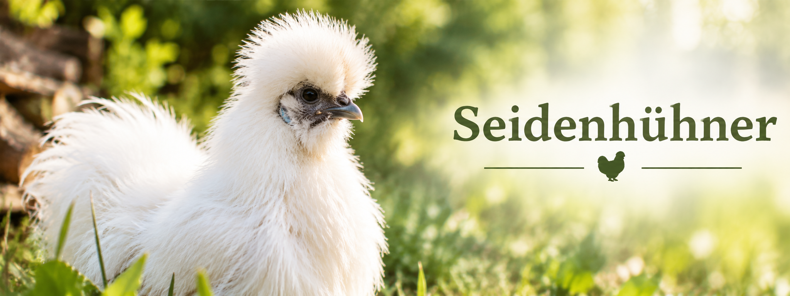

Seidenhühner
Eine außergewöhnliche Hühnerrasse mit seidigem Gefieder

Das Seidenhuhn
Das Seidenhuhn zählt zu den bekanntesten und außergewöhnlichsten Hühnerrassen der Welt. Sein besonderes Merkmal ist das weiche, seidige Gefieder, das eher an Fell als an normale Federn erinnert.
Die Rasse stammt ursprünglich aus Asien und wird seit vielen Jahrhunderten gezüchtet. Heute sind Seidenhühner weltweit als Zierhühner und Hobbyhühner beliebt.
Eigenschaften
| Merkmal | Beschreibung |
|---|---|
| Herkunft | Asien |
| Gefieder | Seidig und flauschig |
| Besonderheit | Dunkle bis schwarze Haut |
| Charakter | Ruhig und zutraulich |
| Eier pro Jahr | 100 |
| Bruttrieb | Sehr ausgeprägt |
Warum ich Seidenhühner mag
An Seidenhühnern gefällt mir besonders ihr außergewöhnliches Aussehen. Durch ihr weiches Gefieder unterscheiden sie sich deutlich von anderen Hühnerrassen.
Außerdem sind sie meist sehr ruhige, freundliche Tiere und ausgezeichnete Mütter und daher sehr angenehm und nützlich in der Haltung.
Bildbearbeitung
Digitale Bilder werden häufig bearbeitet, bevor sie auf einer Webseite veröffentlicht werden. Dabei können die Bildqualität verbessert und die Dateigröße reduziert werden.
Eine gute Bildbearbeitung trägt dazu bei, dass Bilder professionell wirken und Webseiten schneller geladen werden.
Zuschneiden von Bildern
Beim Zuschneiden werden unwichtige Bereiche eines Bildes entfernt. Dadurch wird das Hauptmotiv stärker hervorgehoben und die Aufmerksamkeit der Besucher gezielt gelenkt.
Zu den wichtigsten Möglichkeiten der Bildbearbeitung gehören:
- Zuschneiden
- Drehen
- Skalieren
- Komprimieren
Skalieren von Bildern
Unter Skalieren versteht man das Verändern der Bildgröße. Für Webseiten werden Bilder häufig verkleinert, damit die Dateigröße reduziert wird und die Seite schneller geladen werden kann.
Helligkeit und Kontrast
Durch die Anpassung von Helligkeit und Kontrast können Details besser sichtbar gemacht werden. Besonders bei Tierfotografien hilft dies, Gefiederstrukturen und Farben deutlicher hervorzuheben.
Dateiformate
| Format | Eigenschaft |
|---|---|
| JPG | Ideal für Fotos, geringe Dateigröße |
| PNG | Unterstützt Transparenz |
| WebP | Moderne Komprimierung für Webanwendungen |
Beispiel für Bildoptimierung
Vor dem Hochladen auf eine Webseite sollten Bilder hinsichtlich ihrer Größe und ihres Dateiformats optimiert werden. Dadurch wird die Ladezeit verkürzt und die Benutzerfreundlichkeit verbessert.
Ein großes Originalbild kann mehrere Megabyte Speicherplatz benötigen. Durch Skalierung und Komprimierung kann die Größe deutlich reduziert werden, ohne dass die Bildqualität sichtbar leidet.
Fachlicher Bezug zur Medientechnik: Die Bildbearbeitung ist ein wichtiger Bestandteil der digitalen Medienproduktion. Sie verbessert die Darstellungsqualität von Bildern, optimiert die Ladezeiten von Webseiten und sorgt für eine professionelle Präsentation digitaler Inhalte.
© Atina Rodler 21.04.2026